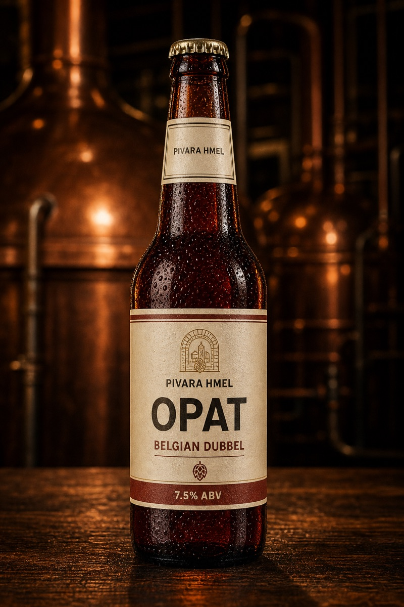
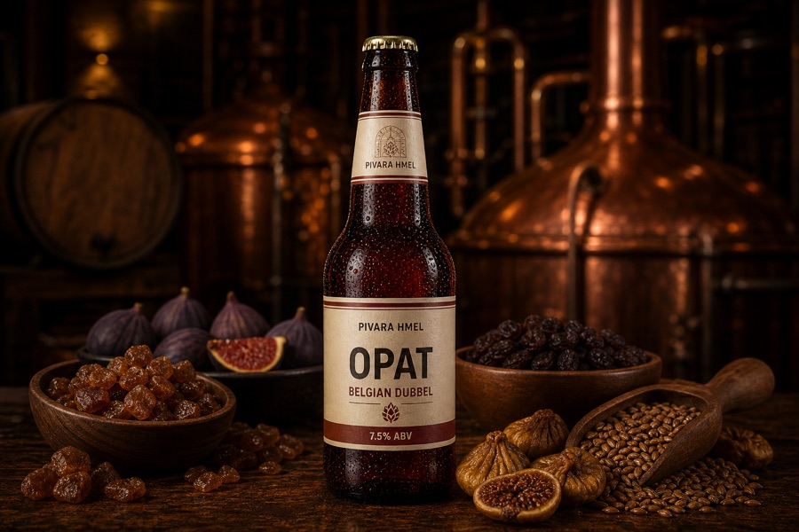

← All beersTaste it at the brewery
04 / Belgian Dubbel
Opat
“Abbot”
Ruby-brown, with raisin, fig, caramel and dark fruit.
7.5%ABV
20IBU
18SRM

↔ DRAG TO SPIN01 / The character
MORE THAN
A LABEL.
Opat is the second Belgian beer in the range. Dark specialty malts give layers of fruit and caramel while the body stays drinkable.
GOOD COMPANY
stews, aged gouda, dark chocolate
BEST SERVED
10-12°C · chalice
02 / The open recipe
- Malt
- Pilsner, CaraMunich, Special B
- Hops
- Styrian Goldings
- Yeast
- Belgian abbey
- Original gravity
- 1.068
- Color
- 18 SRM
- Alcohol
- 7.5%
03 / How it is brewed
FROM THE
FIRST GRAIN.
Explore each stage of the recipe.

01 / 05
Malt & milling
Pilsner with CaraMunich and Special B plus dark candi sugar — the source of raisin, fig and caramel.
Temperature18°C
Gravity—
05 / The next character
Koren
Robust Porter · 6.2% ABV